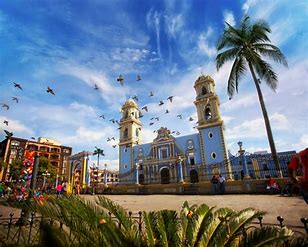
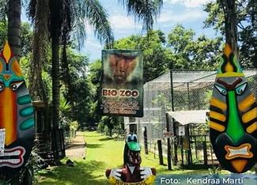
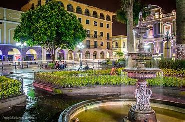
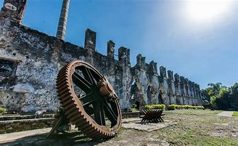

Explora los mejores destinos de Córdoba
Descubre la riqueza cultural, histórica y natural que esta hermosa ciudad tiene para ofrecerte.
¿Qué puedes encontrar aquí?
Desde majestuosos parques y haciendas históricas hasta zoológicos fascinantes, nuestra guía te ayudará a planificar tu viaje perfecto.
|  |  |  |
¡No te lo pierdas!
Conoce los horarios, precios y direcciones de los mejores lugares turísticos, ubica cada destino en nuestro mapa interactivo y obtén toda la información de contacto que necesitas.